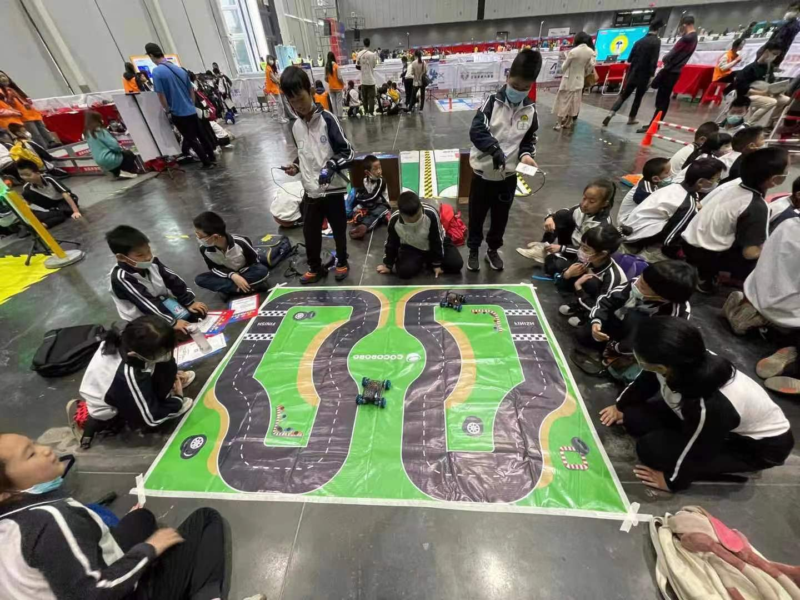

项目作品展示
说明：本作品集更多展示在2020年之后的部分作品经历，为了本网页能较为流畅快速加载，只展现部分有代表性的作品内容。
XXPi单主板图
XX派套件基于国产芯片全志V831进行开发，使用基于openWrt Linux修改的Tina Linux系统。整个项目开发工作包含对CocoPi相关硬件电路的设计开发订制（主板、扩展板、摄像头、摄像头转接板、扩展蓝牙、屏幕等）、系统运行架构的设计及开发（镜像裁剪打包、显示及执行框架、与手机平板电脑等交互）、应用层的开发适配（各类样例程序、驱动及python包、传感器执行器适配等）。
XXPi迭代过程
XXPi及其扩展板进化图
CocoPi 电路设计模型图
XXPi Solidworks产品建模渲染
XXPi扩展板3D效果图

XXPi完整组合体实拍图

XXPi双目摄像头
XXPi摄像头转接板
XXPi扩展板V1版本

各类AIoT模块的设计开发升级
设计、开发升级了诸如多种订制型号电源动力扩展板、用于与无人机通信的2.4Ghz模块、基于人工智能芯片K210的AI模块迭代设计优化、基于ESP32的IoT青春版、升级了遥控手柄模块屏幕模块、摄像头模块，另外开发了对多种传感器、执行器的支持。这些模块应用于学校日常教学、省市科创比赛、粤港澳大湾区比赛、腾讯未来教室扶贫项目等场景中。
AI模块升级V3版本
电源动力扩展板修改版
屏幕模块竞赛定制版
遥控手柄升级版
各类传感器开发
金属麦轮车建模
设计、开发了全金属麦克纳姆轮小车车体及各类结构件。该小车与AIoT套件相结合，发展出诸如体感操控麦轮车、AI自动驾驶麦轮车、水弹枪麦轮车、机械臂麦轮车、与无人机联动的无人驾驶运输车等。该小车应用于与华南师范大学李克东教授合作实践的麦克纳姆轮小车项目、腾讯扣叮比赛、世界机器人大会（WRC）、深圳市青少年科技创新大赛、香港机器人竞赛中。
在后续开发过程中，我还开发了更大型的麦轮车，为它特意设计了动力更加强劲的电机驱动电路。
机械臂大麦轮车
大麦轮车演示视频
AI麦轮车
AI麦轮小车在比赛中的应用
体感操控麦轮车
麦轮车在青少年科技创新大赛中
麦轮车在世界机器人大会腾讯展台

世界机器人大会麦轮小车比赛
水弹麦轮车课堂场景
具体实施开展了和华南师范大学李克东教授团队在东莞某小学开展的为期一年的STEAM课程实践，该课程基于李克东教授"5EX"教学理念设计实施，在项目合作过程中，我设计升级了AIoT小车的结构、电路、无线操控及AI自动驾驶功能，与实验学校教师日常开展课程研讨答疑及需求了解并开发课程资源给到实验学校教师。
与华南师范大学李克东教授、詹泽慧教授、钟柏昌教授、王冬青教授团队等建立了良好的合作关系。多次参与与各位教授团队开展实施的STEAM教育研讨、工作坊、培训活动等。
AIoT麦轮车课程第一学期期末验收
AIoT麦轮车课程第二学期期末验收（疫情原因改为线上进行）

工作坊现场照片等
物联网植物生长培育箱在广州黄埔某学校
2021年~2023年期间，与中山八斗农业公司合作，设计开发了一款可以应用于中小学科创跨学科编程教育的物联网植物生长培育箱。该公司向我们提供无土栽培植物生长架（包含水循环泵、温度传感器、风扇等），我对该植物生长架进行IoT物联网改造，设计新的控制电路板，并进行系统程序开发，使其升级成为一款可以进行物联网云端数据同步与远程控制的植物生长培育箱。
这款物联网植物生长培育箱一共设计迭代了两代三款。第一代使用了ATmega32U4（Arduino leonardo）作为主控板并手动搭建了控制扩展电路板。第二代使用了ESP32（IoT主控）作为控制板，并设计了专门的控制植物生长培育箱外围设备的扩展控制板。在开发它的控制程序后，将代码同步给前端同事进行图形化积木封装。该植物生长培育箱销售往广州、深圳、香港多所学校，应用于中小学科创教育跨学科学习中。

一代徒手搓的控制线路板
第一代物联网植物生长培育箱接线
一代植物生长培育箱连接云端控制台
植物生长培育箱二代电路板
广州黄埔某学校的植物生长培育箱
二代升级电路扩展板（左中图）与原配的控制板（右）
控制代码封装后的编程积木
第三版植物生长培育箱在香港学校
与陆吾智能合作的XGO AI机器狗（初代）
2020年冬天开始，哈工大机器狗创业团队（后来的陆吾智能）开发了XGO机器狗，希望进军STEAM教育领域。公司与XGO开始进行合作。我具体组织实施了AI模块与XGO机器狗的融合对接。具体工作包含适配硬件通信接口、通信协议、驱动原始代码、机器狗定制版AI模块资源适配及demo开发，协调前端同事进行了代码的图形化积木封装、协调后端同事进行机器狗离线编程软件的打包、测试等。
XGO团队随后推出的XGO-MINI、XGO-LITE等，我组织实施了相应的融合开发工作。在与公司合作后，AI-XGO在Kickstarter进行众筹并大获成功。
Kickstarter众筹界面

AI机器狗在世界人工智能大会
机器狗图形化编程界面
初代AI机器狗测试
XGO-MINI色块识别
AI模块色块识别操控无人机变色
2021年冬天，为省电教馆的省赛落实，与创想无人机公司合作，为其无人机开发了适配我们公司的2.4G无限通信遥控模块，并从协议及程序代码上打通了无人机与AI模块的互相通信机制，设计了“陆空协同”比赛。比赛需要让无人车自动驾驶完成任务并发送指令自动操控无人机。该比赛后续也应用于香港，数百个中小学参加该比赛。

陆空协同比赛现场

AIOT无人机编程图形化界面及积木
测试二代遥控无人机
无人车路标识别控制无人机
无人车颜色识别控制无人机
无人机无人车比赛
2019年参赛的一台MakeX战车
在2017~2019年，组织日常教学、带队参加了MakeX机器人比赛，设计了多款机器人构型，拿到过MakeX机器人竞赛赛区城市赛冠军及全球总决赛亚军的成绩。
MakeX战车底盘建模
MakeX战车搭建
MakeX战队参赛
2018年世界机器人大赛总决赛参赛
MakeX机器人训练1
MakeX机器人训练2
MakeX机器人比赛现场
可编程卡丁车
在2021年，与世界知名的可搭建金属结构件品牌Docyke合作，我为其金属结构件设计了可以使用我们公司一代模块编程控制的电路扩展板并为其编写了驱动程序。该电路扩展模块可以控制docyke的电机、舵机，并自带电池报警、PS2手柄2.4Ghz无线遥控等。
卡丁车编程控制板
卡丁车编程控制板及控制线
卡丁车图形化编程界面
遥控操作可编程卡丁车
安装在上海某学校的沙盘全貌
2021年8月，应上海某公司要求，设计了我们公司沙盘的技术构型并实施搭建，并在9月前往上海学落地交付，开展STEAM科创培训。
沙盘底部搭建
给老师讲解培训沙盘等
游戏机在Previews中的渲染图
2018~2019年，在原子同学创客课程设计时，开发了面包板焊接制作可编程游戏机课程。随后，为了简化学生的学习难度，又设计了PCB硬件版本，并设计了3D打印的外壳。

面包板焊接游戏机
面包板游戏机建模

可编程游戏机初代产品爆炸图
游戏机硬件迭代
游戏机第二版演示
游戏机第二版加外壳

大气质量检测仪实拍及专利.jpg
在2016年-2014年的研发、竞赛、课程设计经历中，研发设计制作了诸多各种硬件、结构、demo。除了前面所详细介绍的作品，此处对其他一些较为大型的demo项目进行集中展示。有些作品申请了发明专利及实用新型专利（专利第一人写了导师、领导名字），有些作品获得了各类大小奖项。
大气质量检测仪左右二等角轴测图
电动lasy及蓝牙音箱专利
电动lasy主控板硬件第一版正面

电动可编程LASY主控专利
电动lasy小车实拍
触摸钢琴演奏
触摸演奏钢琴建模
触摸钢琴组装过程
毕设论文发明专利可长大的储蓄罐
音乐节奏灯
智能垃圾桶
智能垃圾桶建模
智能宠物屋
智能饮水机
香港miniCon比赛打球麦轮车
语音控制智能家居

makex中学组获奖证书
miniRebocon比赛打橄榄球麦轮车
智能核酸检测扫码机
某某同学荣获中国少年科学院十佳小院士
在科创作品、竞赛研发教学期间，带领指导学生设计制作了多个创意作品。这些作品取得了优秀成绩，助力学生的升学、未来科创发展之路，也多次参与实施各类省市级教师培训、工作坊等。
游戏健身自行车结构图

游戏健身自行车在南山区少年科学院演示
游戏健身自行车给深圳教育局领导演示
智能交通义工项目等给团中央少年部部长展示
智能交通义工给南山区领导展示
智能交通义工在深圳会展中心比赛展示
工作坊给老师讲解培训
深圳明德学校应用麦轮车和机器狗教学
深圳园丁实验学校课堂教学
深圳育才三中课堂教学